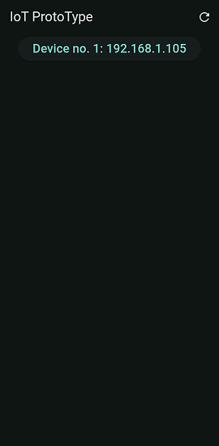
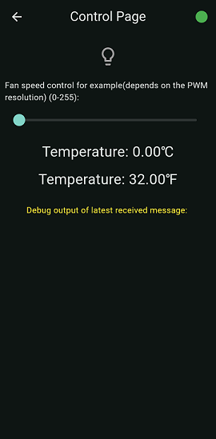
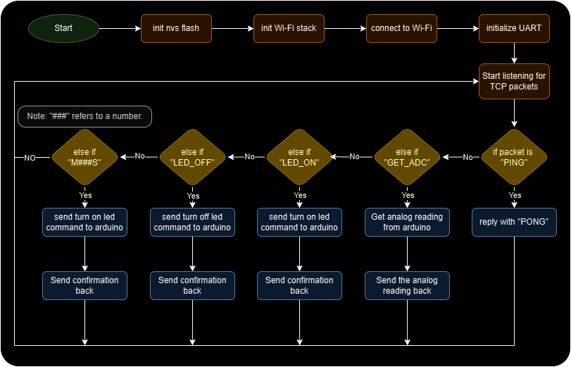
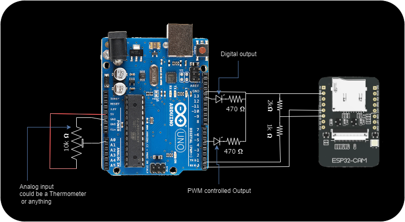

IoT Prototype
Personal project
Overview
This IoT prototype project is made to showcase some of my skill set in programming a wide variety of platforms ranging from MCUs to Mobile phone applications to desktop applications(still in development using Qt framework), and I still have plans to add to the application which are yet to come and will be listed on the GitHub repository linked below.
Flutter application
This flutter application is aimed toward android devices to be able to discover these IoT Wi-Fi enables devices and connect to them and control them.
Application UI:
|  |  |
|---|---|
| Home Screen | Control Screen |
ESP32:
ESP32 is used to process wireless commands and forward the appropriate command to the arduino board that acts as pins expansion since the board I had doesn't have enough pins to use especially the Analog to Digital Converter(ADC) because I can't use it while using Wi-Fi at the same time, so I had to resort to an external Micro Controller Unit (MCU) to be able to get analog readings or even expand the number of digital pins.
ESP32 Flowchart:
Circuit Diagram:
Future plans:
- Flutter reprogrammable pins:
Make pins programmable and store the details in a database in the application and in EEPROM in the MCU.
- Desktop application:
Develop a cross-platform application using Qt framework that can be used to manage and control the device from desktop device as well as mobile phone.